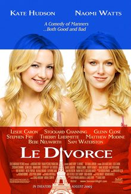

Le Divorce



Director: James Ivory
Cast: Kate Hudson, Naomi Watts, Melvil Poupaud, Thierry Lhermitte
Distributor: Fox Entertainment
Classification: M15+
Running Time: 117 minutes.
An actress who we proudly proclaim as “Australia’s Own”, Naomi Watts is a Hollywood startlet who continues to enjoy the limelight on an international stage. With her stunning performance in 21 Grams leading to an academy award nomination, it bewilders me how Le Divorce fell through the cracks. It probably had something to do with the fact that, in spite of a great cast, the film is largely forgettable, mainly due to an overblown script and some very poor decisions made by the film’s screenwriters.
Le Divorce follows the story of young Californian woman Isabel Walker (Kate Hudson) as she arrives in Paris to visit her pregnant sister Roxeanne (Naomi Watts). Isabel has barely walked through the door before discovering that Roxeanne has been deserted by her scoundrel husband Charles-Henri de Persand (Melvil Poupaud), who has fallen into the arms of a Russian artist. Wanting to provide support for her embittered sister, Isabel nonetheless finds herself caught up in an attempt to integrate herself into Parisian society, trying to reinvent herself as a stylish French dame.
To a degree, Le Divorce is a story about cultural clashes. The American sensibilities of the Walker sisters collide with the French traditions of the Persand family, allowing the filmmakers expose the hidden resentment that each culture holds towards the other. Both sisters are constantly corrected for failing to adhere to cultural traditions, and the pregnant Roxeanne is tormented by her French in-laws, particularly by the meddling French mother played by Leslie Caron. “Those girls are not like us. We can’t teach them savoir-vivre… good manners,” Caron’s character exclaims at one point. While the premise shows interest, what begins as an interesting character study and a look at the different cultures quickly descends into farce.
Before long, the film splits into a number of sub-plots: the families begin to fight over a $1 million painting that is found in Roxeanne’s possession, the angry ex-husband of the new flame that Roxeanne’s former husband is now seeing shows up to cause trouble, and things complicate even further when Isabel begins an affair with a married French diplomat played by Thierry Lhermitte. These mishaps become the focus of the film, but it is exactly when the film descends into these convoluted plot lines that Le Divorce loses its way. A series of ridiculous situations fail to accommodate the story and only serve to complicate the plot, as Le Divorce moves along. Gradually, the film begins to stumble and becomes bogged down. And with the tragic circumstances that proliferate towards the end, culminating in a ‘final showdown’ at the Eiffel Tower, the audience is forced to beg the question : “What is the point?”
The film’s only saving grace are the performances, and the actors that have been chosen to portray the somewhat underdeveloped characters. Kate Hudson injected exactly the right amount of charisma that was needed into her portrayal of Penny Lane in Almost Famous, and she continues to charm in Le Divorce. And Naomi Watts imbues her character with a lot more interest and integrity that the film deserves: though embittered by her circumstances, the jilted Roxeanne still somehow manages to maintain her dignity. While the script is flawed to begin with, Naomi Watts’ naturalistic performance lifts the film out of a depth of dull predictability. As an onscreen pair with Kate Hudson they are charming to watch, and quite believable as sisters; but neither one of have much to work with here.
While Le Divorce shows some potential in the early scenes, what could have been a sophisticated and witty comedy-drama instead descends into a banal 117 minutes that is barely redeemed by a typically excellent performance from Naomi Watts. Somewhat enjoyable, but entirely forgettable.
Rating: 2 out of 5